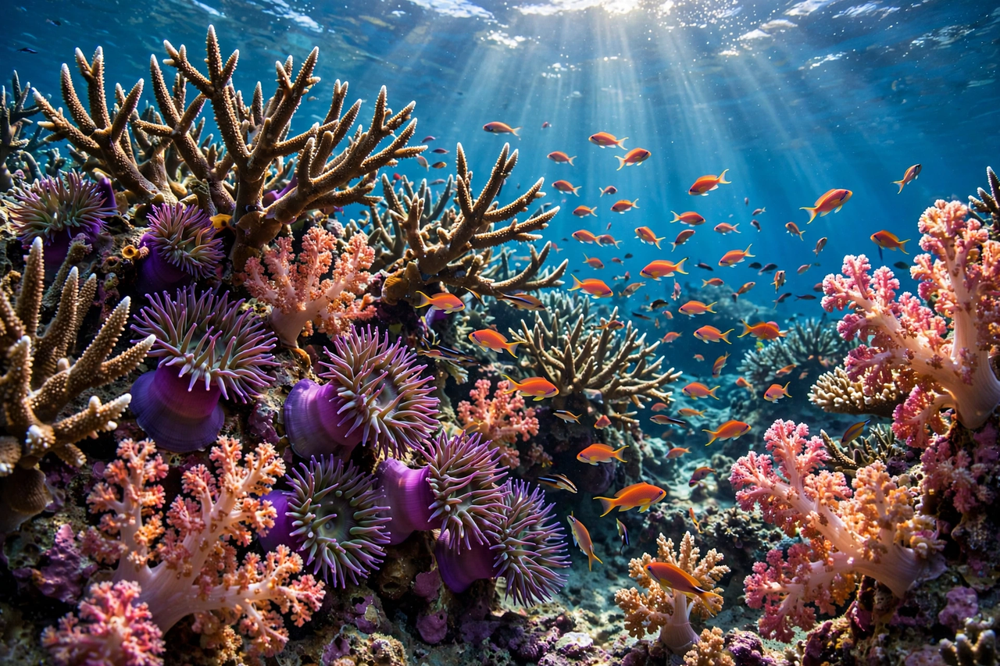

Coral reef

[Image: a vibrant coral reef scene with branching corals, sea anemones and schools of small tropical fish]A coral reef is an underwater ecosystem built by colonies of coral polyps — small marine animals related to jellyfish — whose limestone skeletons accumulate over centuries into reefs. Reef-building corals host symbiotic algae (zooxanthellae) whose Photosynthesis feeds the coral in sunlit, nutrient-poor tropical waters; the partnership explains how Darwin's 'oasis in a watery desert' teems with life.
Reefs occupy well under 1% of the ocean floor yet support roughly a quarter of all marine species — the richest marine habitat on Earth. The Great Barrier Reef off Australia, the largest living structure, stretches over 2,300 km. Darwin correctly inferred how atolls form by subsidence of volcanic islands, decades before the mechanism could be proven.
Threats
Warming seas cause coral bleaching — expulsion of the algae — which has become frequent and mass-scale (global events in 1998, 2010, 2014–17 and the mid-2020s), while ocean acidification slows skeleton-building. Local pressures include pollution, overfishing of grazers, and disease. Many scientists project near-total loss of warm-water reefs at 2°C of warming; protection of refuges and rapid emissions cuts are the main hopes.
Value
Reefs protect coastlines from storms, support fisheries feeding hundreds of millions, and yield medicines and tourism revenue worth tens of billions of dollars annually.